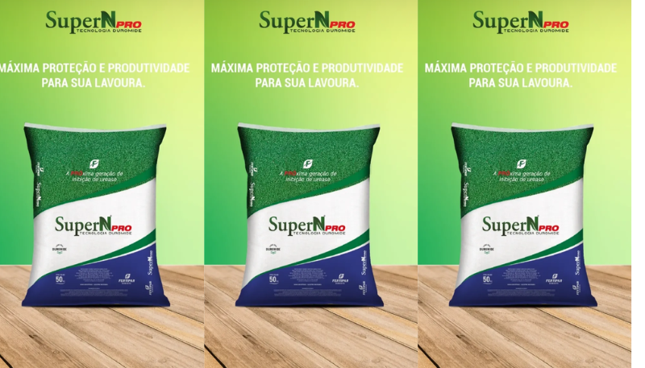
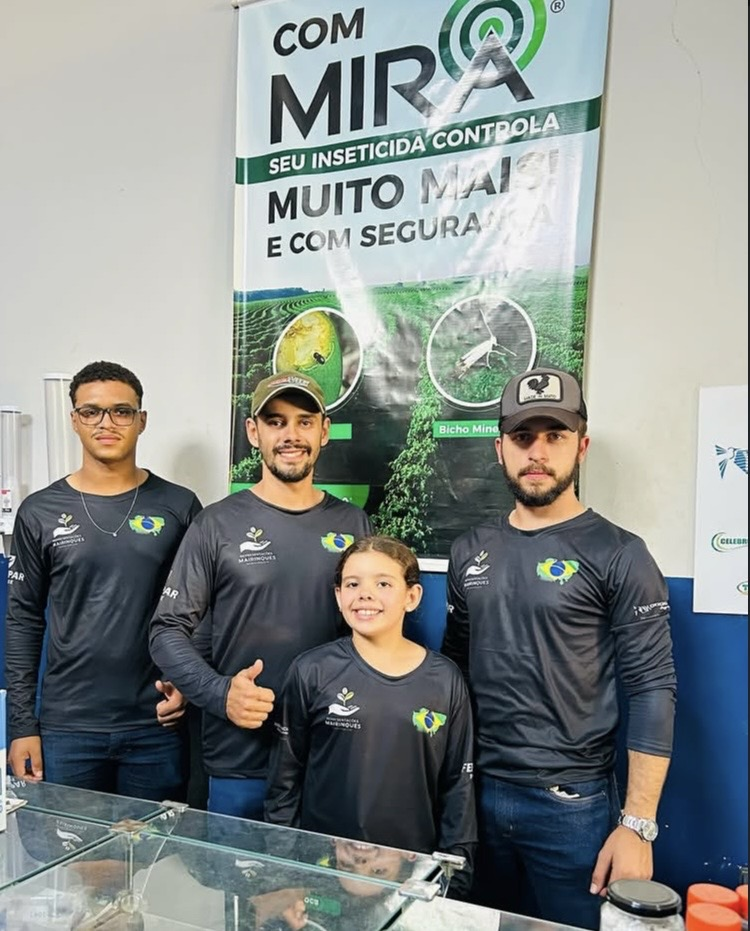
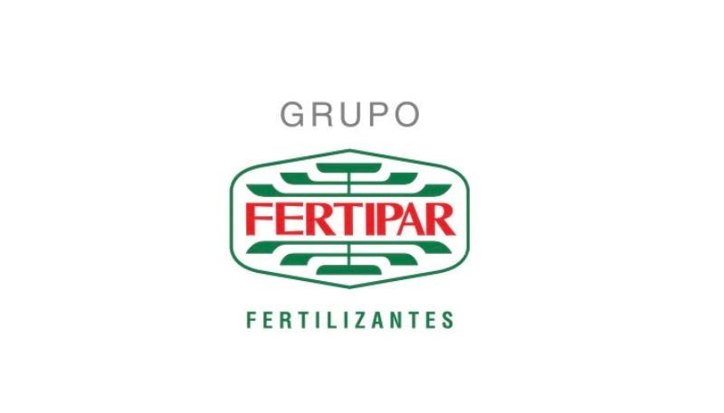
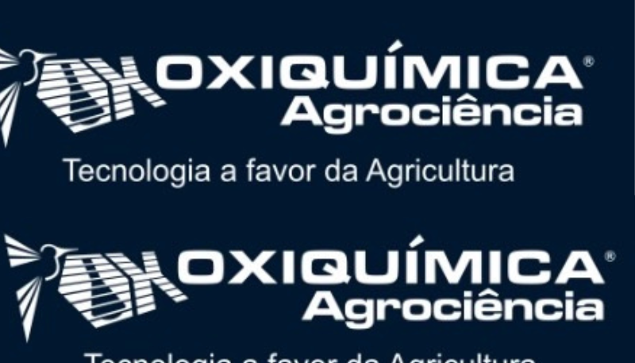
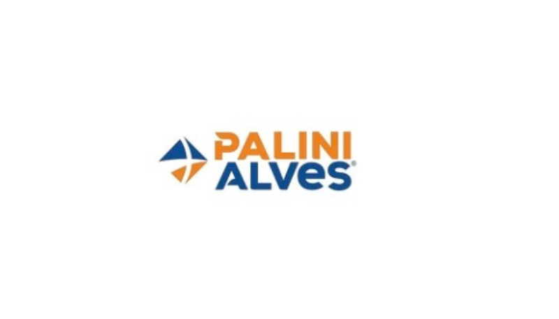
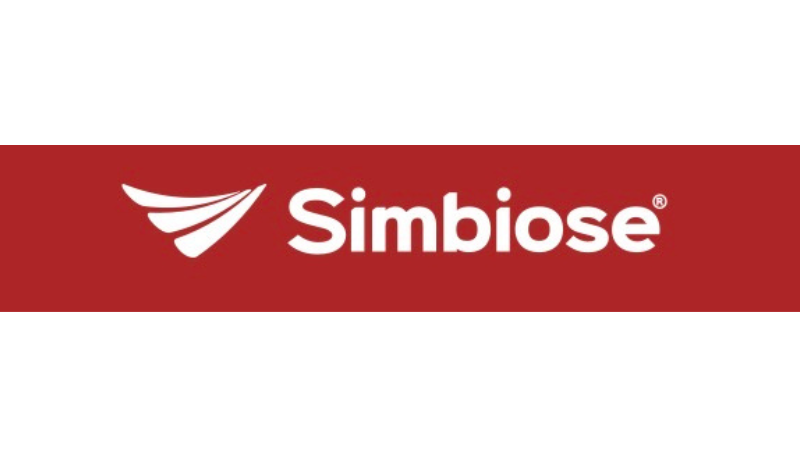
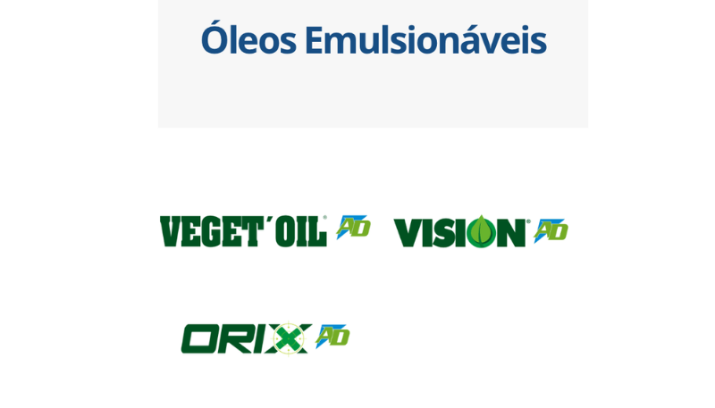
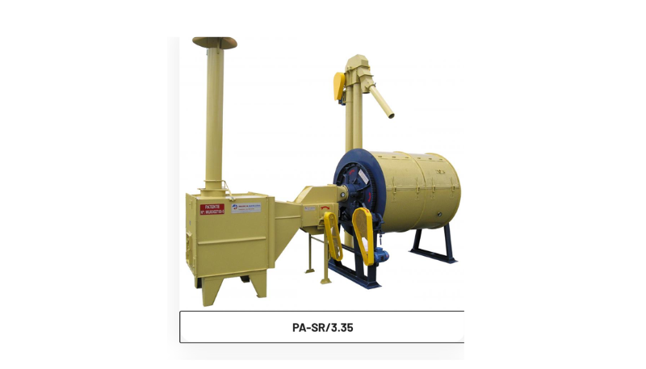
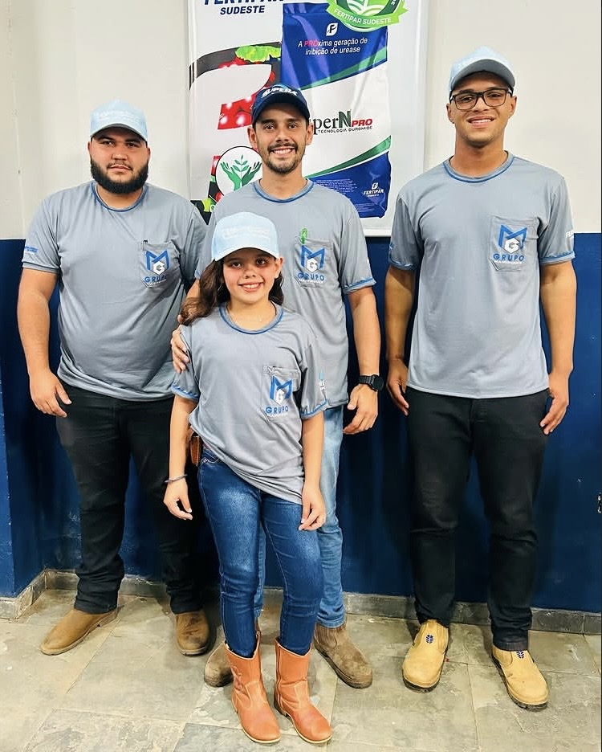
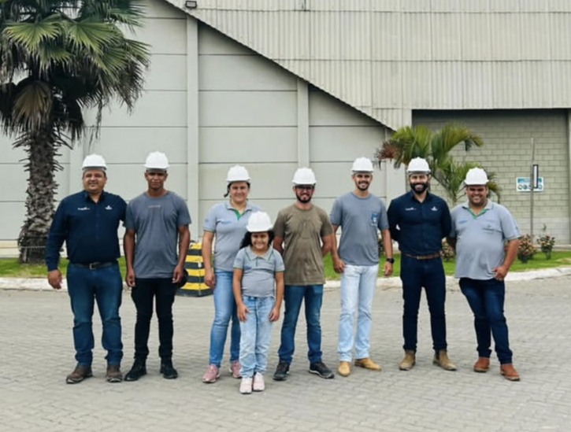

Nutrição e fertilidade
Fertilizantes e soluções biológicas para diferentes culturas, fases e objetivos de manejo.

Atendimento próximo para produtores de diferentes culturas encontrarem insumos, proteção e equipamentos alinhados à realidade da produção.

Marcas que fazem parte da nossa rota




Reunimos soluções de marcas reconhecidas para ajudar você a avançar da necessidade até a escolha do produto ou equipamento.
Fertilizantes e soluções biológicas para diferentes culturas, fases e objetivos de manejo.

Opções para apoiar o manejo e proteger o potencial produtivo da lavoura.

Tecnologia para apoiar o trabalho no campo e tornar a operação mais eficiente.

O atendimento começa pela realidade da sua produção — cultura, região e necessidade — para direcionar a conversa com objetividade.
Começar meu orçamentoInforme sua cultura, região e o desafio que quer resolver.
A conversa segue com atendimento próximo e opções para o seu cenário.
Você recebe as informações comerciais para decidir com tranquilidade.
Um portfólio diverso para conversar sobre nutrição, proteção, biológicos e equipamentos.
Fertilizantes e nutrição de cultivos.
Proteção e nutrição de cultivos.
Máquinas e tecnologia para o campo.
Biológicos e soluções para o manejo.


A Representações Mairinques atua conectando produtores a soluções agrícolas de parceiros que fazem parte do dia a dia da operação.
Cada atendimento começa ouvindo a necessidade. Sem formulário complicado, sem promessa genérica: uma conversa objetiva para encontrar o caminho mais adequado.
Preencha o roteiro ao lado. A mensagem será organizada e aberta no WhatsApp para você revisar antes de enviar.